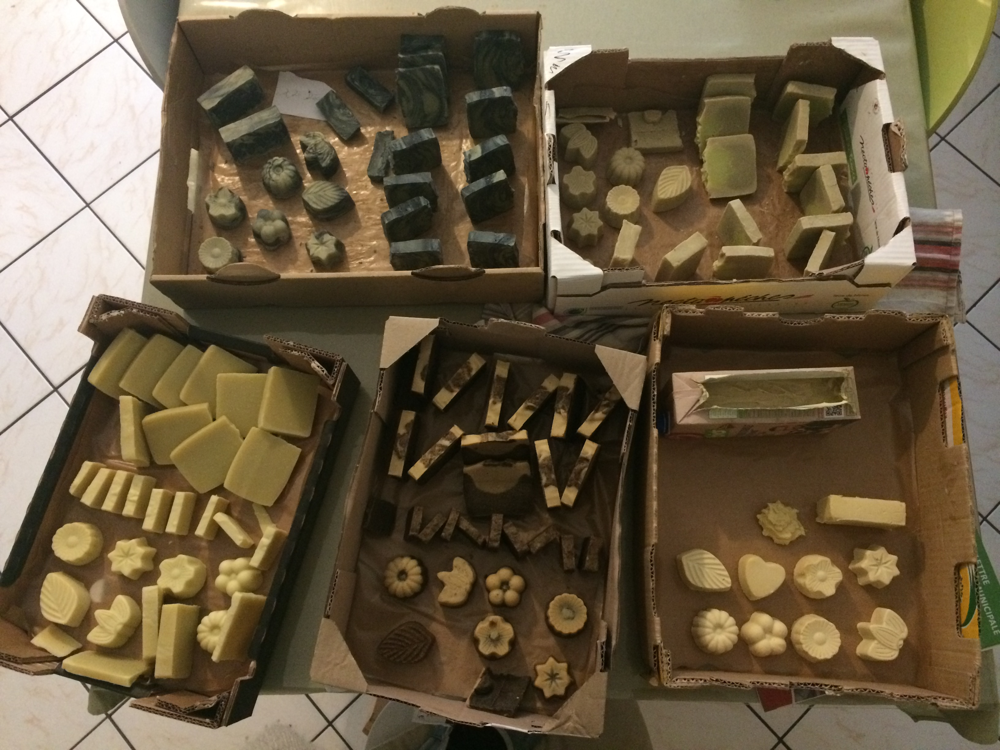
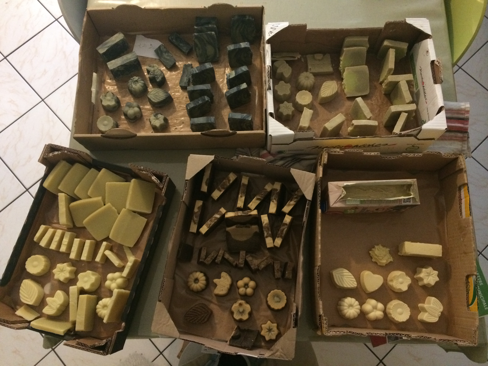

Savons - Saponification à Froid
Savon naturel saponifié à froid (SAF) aux huiles végétales et essentielles BIO, et d'autres ingrédients naturels bio qui respecte les propriétés des matières premières utilisées. Ces savons sont plus doux, plus hydratants et moins agressif pour la peau, car ils respectent le film hydrolipidique de la peau et présentent 6 et 8 % de surgras.
Différents savons : au miel/apaisant, à l'huile d'amande et lait d'amande/adoucissant, au curcuma/cicatrisant, à l'argile verte/purifiant, au café/exfoliant, au lait de chèvre/assainissant ...
 
